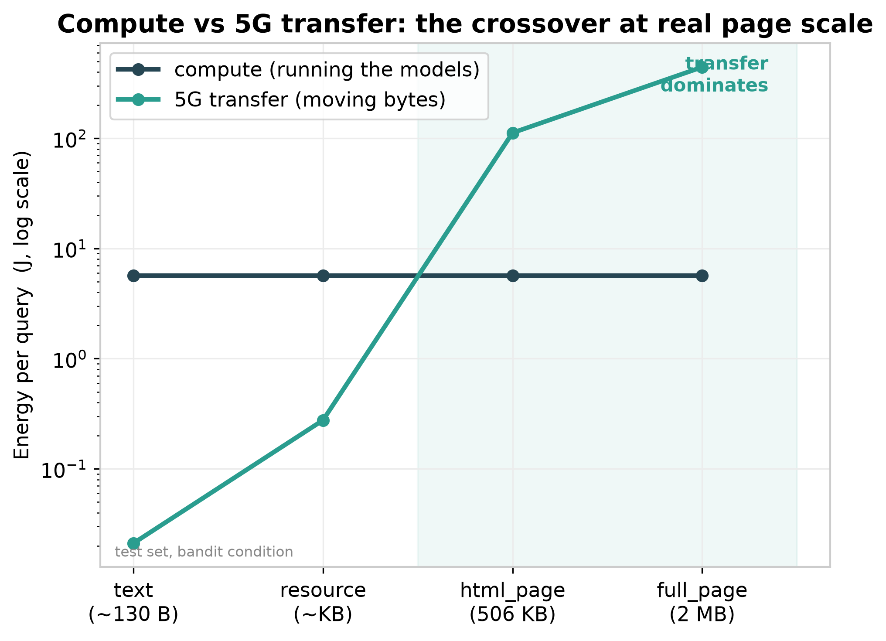
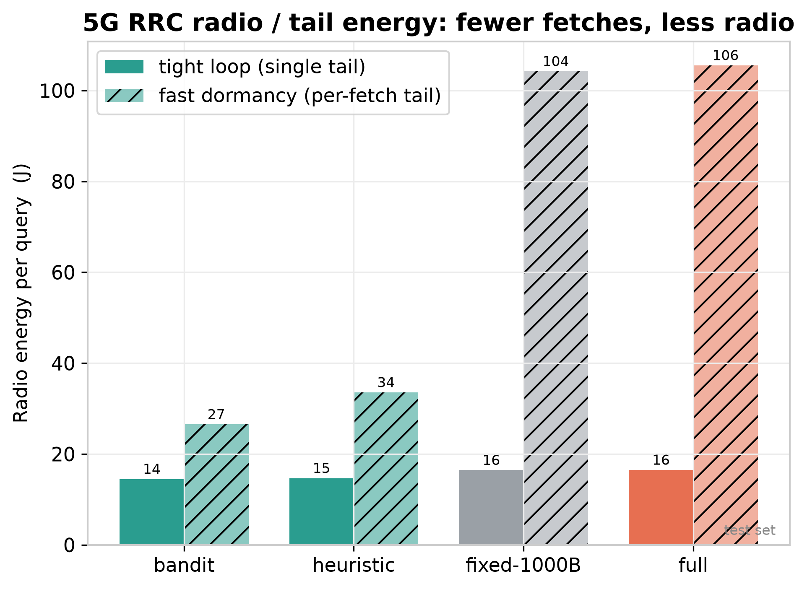
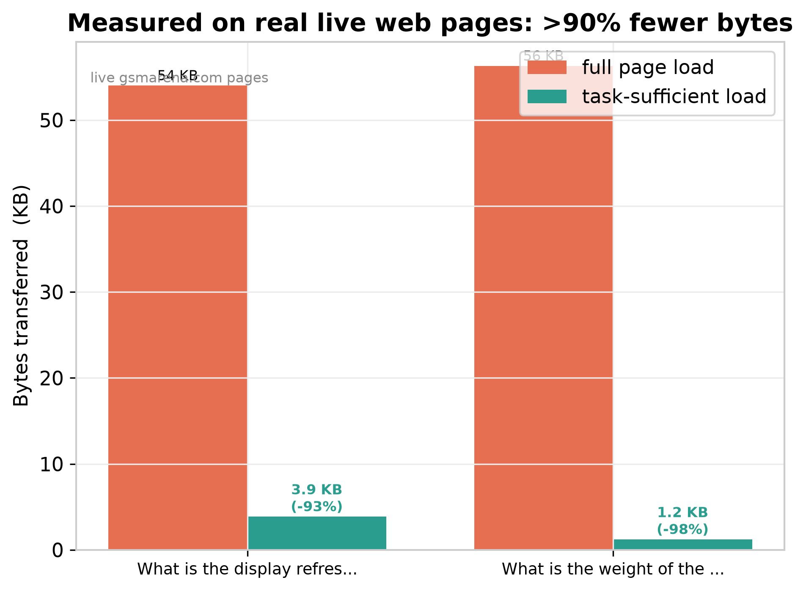

A question answering system that decides, per question, exactly how much web evidence it needs, stops as soon as it has enough, and moves fewer bytes and less energy over a 5G link, without losing answer quality. Built entirely on local models, no hosted LLM API anywhere in the pipeline.
Most retrieval systems either load a fixed amount of context or load everything they can. Both waste data. EcoBudget asks a sharper question: not "can it answer," but what is the smallest amount of loading that still answers correctly, and whether the energy saved by loading less beats the energy spent running the models.
The question is parsed into small, explicit (entity, attribute) requirements, e.g. (iPhone 16, price), snapped to a closed 35-attribute vocabulary. The system only ever seeks evidence for these exact facts.
For each requirement it gates candidates to the matching entity first, then ranks them by the attribute. This two-stage, entity-aware step surfaces the right passage without dragging in neighbours.
After every retrieval a learned LinUCB controller weighs coverage and confidence against the byte cost of one more fetch, and chooses STOP or RETRIEVE, halting the instant the evidence is sufficient.
It answers from only the passages gathered, then logs the exact bytes moved and the 5G transfer + RRC radio energy that implies, so every saving is measured on real coefficients, never estimated.
The headline results our team measured, on a frozen test set and on real web pages.
Tap a question in the app. EcoBudget breaks it into the exact facts it needs, retrieves only those, decides it has enough, and answers, while a normal browser would haul the entire page. Every step is explained as it runs.
A chain of small, independent, dependency-injected components, each unit tested without downloading a model.
Turns a question into (entity, attribute) requirements, snapped to a closed 35-attribute vocabulary.
decomposer.pyMiniLM bi-encoder, entity-aware two-stage: gate to the entity, then rank by the attribute.
retriever.pyScores coverage with a RoBERTa QA confidence signal, since similarity is fooled by entity-only matches.
evidence.pyContextual bandits, LinUCB by default, trading evidence coverage against byte cost.
bandit.pyFine-tuned flan-t5-base + LoRA, called once per requirement, with an abstain path.
answer.pyAnswer-type-aware checker with a symmetric normalizer, reporting success and fact-F1 separately.
judge.pyThe system.py orchestrator wires every component into one deployed path, and energy.py turns each query into joules: model-FLOP compute, a 5G per-bit transfer model over measured real page payloads (median 506 KB), and an RRC radio-state and tail-energy model. Every coefficient is cited, so the savings are grounded, not guessed.
Per-query flow
Planned as phases A through H. Here is the honest status of each, including the parts that did not go as first expected.
At snippet scale compute dominates transfer ~100x, so saving bytes alone saves little; the policy still wins via fewer evidence-scoring inferences.
A 5G per-bit model split into radio access, transport, and device receive. At realistic page scale transfer dominates and loading fewer pages is the lever.
186 passages, 344 hand-authored seed tasks, 1,376 total tasks, frozen train/val/test splits grouped by seed with a coverage invariant enforced in code.
Two-stage retrieval, gate to the entity then rank by attribute. recall@1 rose from 0.914 to 0.989, recall@5 reached a perfect 1.000.
Added LinUCB, Thompson sampling, and an Adaptive-RAG analog. All adaptive methods converge; the SGD bandit is seed-unstable, so LinUCB is the default.
An RRC radio-state model: fewer, earlier fetches shorten radio active time and tail energy. The finding holds across every cited coefficient range.
Consolidated ablations, multi-seed variance, a single frozen test-split run, and a reproducibility appendix with every command and checkpoint config.
Related work, the figures, and the limitations section. The engineering and results are complete; this is the write-up stage.
Every number here was produced on our own machine and is reproducible from the commands in the repository.
On 175 unique seed requirements, comparing whole-question against per-requirement and entity-aware retrieval.
| Retriever | recall@1 | recall@5 |
|---|---|---|
| Whole-question baseline | 0.589 | 0.931 |
| Per-requirement bi-encoder | 0.914 | 0.983 |
| Entity-aware, attribute-ranked | 0.989 | 1.000 |
The single final run against the frozen test set, after every configuration was locked on validation. LinUCB is the deployed policy.
| Condition | Success | Fact F1 | Avg bytes | Fetches |
|---|---|---|---|---|
| LinUCB (deployed) | 0.895 | 0.944 | 108 | 1.87 |
| SGD bandit | 0.895 | 0.944 | 106 | 1.84 |
| Heuristic | 0.895 | 0.944 | 136 | 2.29 |
| One per requirement | 0.831 | 0.911 | 101 | 1.74 |
| Full page load | 0.903 | 0.919 | 420 | 7.56 |
Generated from the frozen test results and the measured payload and real-page data.



A structured task benchmark, a frozen split, a policy comparison, and the metrics that matter for a 5G-green claim.
The point is a defensible energy story, not a flattering one.
Not under the entity-aware retriever. With recall@1 at 0.989 there is little uncertainty left to exploit, so the learned policy converges to the same behavior as the heuristic (difference 0, CI [0, 0]). It still clearly dominates fixed budgets and full load, and its edge over the heuristic grows with retrieval uncertainty, characterized directly in the noise sweep.
No. On validation, the SGD bandit, LinUCB, Thompson sampling, and the heuristic all reach the same success at the same bytes. Over five seeds the SGD bandit is unstable (0.790 ± 0.283, collapsing on some seeds), while LinUCB (0.913 ± 0.007) and Thompson (0.897 ± 0.014) are stable. LinUCB is the deployed default for that reason.
It depends on payload realism. At short-snippet scale, compute dominates transfer by roughly 100x. At realistic web-page scale (median 506 KB), transfer dominates and loading fewer pages becomes the primary energy lever. The policy wins in both regimes, for different reasons.
No. Every model runs locally: flan-t5-base with LoRA, a MiniLM bi-encoder, and a RoBERTa QA confidence model. This is enforced in code: a script scans for banned imports and known API hosts, and a test runs it as part of the suite.
The paper writeup itself in Phase H. Two known ceilings: narrative tasks have no training coverage and currently fail, and answer quality degrades on raw live-page text (a corpus-to-web domain gap) even though the byte and energy savings hold.